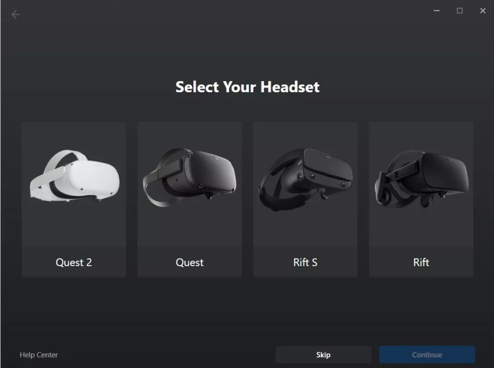
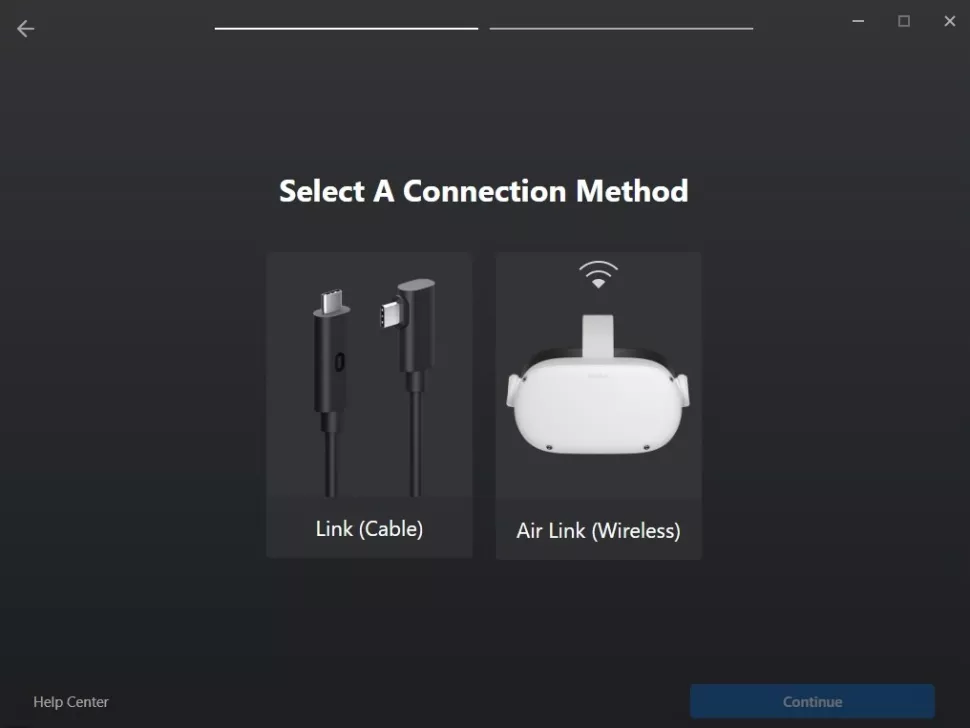
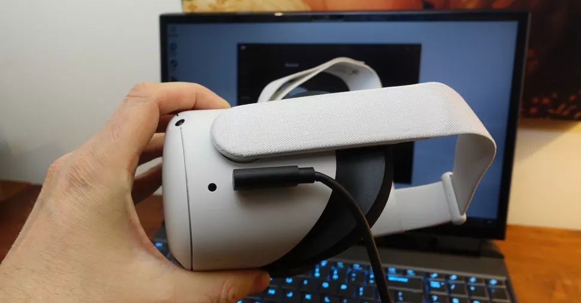
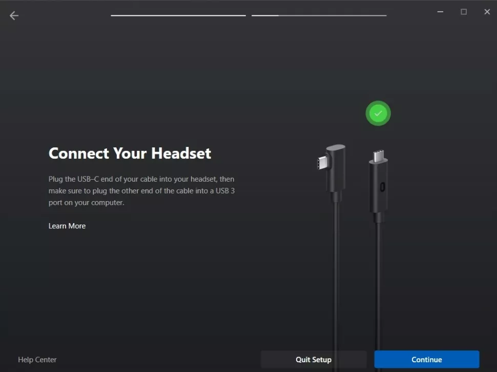

Primeros pasos para el usuario de PC VR - Cable Link
No todas las PC son compatibles con Oculus Link, incluso si son PC "Listos para VR". Para conectar sus auriculares Oculus Quest a su PC, necesitará las siguientes especificaciones de la computadora:
windows 10
Al menos 8 GB de RAM
Un puerto USB 3.0 de repuesto
-
Una CPU para VR que sea equivalente o superior a Intel i5-4590 o AMD Ryzen 5 1500X
-
Una tarjeta gráfica para VR superior a la NVidia GeForce 1080.
Software
Descarga la aplicación oficial de Oculus para PC, que es el software que ejecutará Oculus Link y te permitirá jugar juegos de PC VR en tus auriculares. Puede obtenerlo aquí , listado como descarga para Link Cable y Air Link. También querrá asegurarse de que su Quest esté actualizado con las actualizaciones de software, que puede verificar en el menú de configuración de los auriculares.
Cómo conectar su Oculus Quest 2 a una PC a través de Link
Esta es quizás la forma más fácil de conectar su Oculus Quest 2 a una PC, pero significa que estará atado a su computadora y no podrá moverse con tanta libertad. Para esto, necesitará un cable USB-C. Si su PC tiene un puerto USB-C, puede usar un cable USB-C a USB-C; de lo contrario, necesitará un cable USB-C a USB-A. Meta vende un cable Oculus Link de 16 pies por $79, pero cualquier cable USB-C debería funcionar; Sin embargo, querrás uno que sea bastante largo.
Seleccionar dispositivo
1.Asegúrate de que tu Oculus Quest 2 esté encendido. En la aplicación de Oculus, seleccione Dispositivos y luego Agregar auriculares.
2.Seleccionar QUEST 2
Link
3.Seleccionar Link(Cable) como metodo de conexion
Conexion
4.Conecta un extremo del cable a tu visor Oculus 2 y el otro extremo del cable a tu PC.
5. En la aplicación de Oculus, presione Continuar. En la pantalla que aparece a continuación, puede elegir probar su conexión de cable o presionar Continuar.
Su Oculus Quest 2 ahora está conectado a su PC.